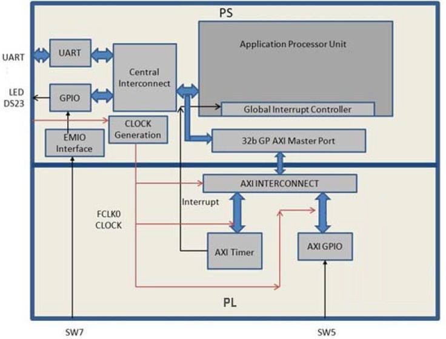
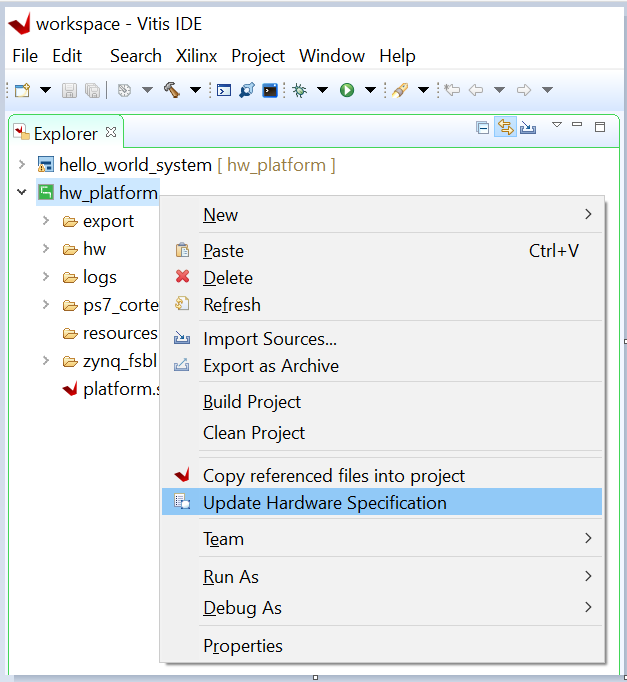

Using the GP Port in Zynq Devices¶
One of the unique features of using the Xilinx® Zynq®-7000 SoC as an embedded design platform is in using the Zynq SoC processing system (PS) for its Arm™ Cortex-A9 dual core processing system as well as the programmable logic (PL) available on it.
In this chapter, you will create a design with:
An AXI GPIO and AXI Timer in the fabric (PL) with an interrupt from the fabric to the PS section
A Zynq SoC PS GPIO pin connected to the fabric (PL) side pin using the EMIO interface
The flow of this chapter is similar to that in Using the Zynq SoC Processing System and uses the Zynq device as a base hardware design. It is assumed that you understand the concepts discussed in Using the Zynq SoC Processing System regarding adding the Zynq device into a Vivado IP integrator block diagram design.
Adding IP in PL to the Zynq SoC Processing System¶
There is no restriction on the complexity of an intellectual property (IP) that can be added in fabric to be tightly coupled with the Zynq® SoC PS. This section covers a simple example with an AXI GPIO, an AXI Timer with interrupt, and a PS section GPIO pin connected to a PL side pin using the EMIO interface. The block diagram for the system is as shown in the following figure.

You can use the system created in Using the Zynq SoC Processing System and continue with the following examples.
In the examples in this chapter, we will expand on the design with the following design changes:
The fabric-side AXI GPIO is assigned a 1-bit channel width and is connected to the SW5 push-button switch on the ZC702 board.
The PS GPIO ports are modified to include a 1-bit interface that routes a fabric pin (using the EMIO interface) to the SW7 push-button switch on the board.
In the PS section, another 1-bit GPIO is connected to the DS23 LED on the board, which is on the MIO port.
The AXI timer interrupt is connected from the fabric to the PS section interrupt controller. The timer starts when you press any of the selected push buttons on the board. After the timer expires, the timer interrupt is triggered.
Along with making the above hardware changes, you will write the application software code. The code will function as follows:
A message appears in the serial terminal and asks you to select the push button switch to use on the board (either SW7 or SW5).
When the appropriate button is pressed, the timer automatically starts, switches LED DS23 OFF, and waits for the timer interrupt to happen.
After the timer interrupt, LED DS23 switches ON and execution starts again and waits for you to select the push button switch in the serial terminal again.
Example 6: Adding Peripheral PL IP¶
Input and Output Files¶
Update Vivado Design Diagram¶
In this example, you will add the AXI GPIO, AXI Timer, the interrupt instantiated in the fabric, and the EMIO interface. You will then validate the fabric additions.
Open the Vivado design created in Example 1:
Launch the Vivado® IDE.
Under the Recent Projects column, click the edt_zc702 design that you created in Using the Zynq SoC Processing System.
In Flow Navigator window, click Open Block Design under IP Integrator.
Add the AXI GPIO and AXI Timer IP:
In the Diagram window, right-click in the blank space and select Add IP.
In the search box, type AXI GPIO and double-click the AXI GPIO IP to add it to the block design. The AXI GPIO IP block appears in the Diagram window.
In the Diagram window, right-click in the blank space and select Add IP.
In the search box, type AXI Timer and double-click the AXI Timer IP to add it to the block design. The AXI Timer IP block appears in the Diagram view.
Enable the ZYNQ7 Processing System EMIO GPIO:
Double-click the ZYNQ7 Processing System IP block.
The Re-customize IP dialog box opens, as shown in the following figure.

Click MIO Configuration.
Expand I/O Peripherals→ GPIO and enable the EMIO GPIO (Width) check box.
Change the EMIO GPIO (Width) to 1.
Enable the ZYNQ7 Processing System interrupt:
Navigate to Interrupts → Fabric Interrupts → PL-PS Interrupt Ports.
Check the Fabric Interrupts box to enable PL to PS interrupts.
Check IRQ_F2P[15:0] to enable general interrupts. The
CoreN_nFIQsignals are used for fast interrupt.Click OK to accept the changes to the ZYNQ7 Processing System IP. The diagram looks like the following figure.

Connect the PL IPs:
Click the Run Connection Automation link at the top of the page to automate the connection process for the newly added IP blocks.
In the Run Connection Automation dialog box, select the check box next to All Automation, as shown in the following figure.

Click OK.
Upon completion, the updated diagram looks like the following figure.

Customize the AXI GPIO IP block:
Double-click the AXI GPIO IP block to customize it.
Under the Board page, make sure that both GPIO and GPIO2 are set to Custom.
Select the IP Configuration page. In the GPIO section, change the GPIO Width to 1 because you only need one GPIO port.
Ensure that All Inputs and All Outputs are both unchecked.
Click OK to accept the changes.
Connect interrupt signals:
Notice that the Interrupt port is not automatically connected to the AXI Timer IP Core. In the Block Diagram view, locate the
IRQ_F2P[0:0]port on the ZYNQ7 Processing System.Scroll your mouse over the connector port until the pencil button appears, then click the IRQ_F2P[0:0] port and drag to the interrupt output port on the axi_timer_0 to make a connection between the two ports.
Make the PS GPIO port external:
Notice that the ZYNQ7 Processing System
GPIO_0port is not connected. Right-click the GPIO_0 output port on the ZYNQ7 Processing System and select Make External.
The pins are external but do not have the required constraints for our board. To constrain your hardware pins to specific device locations, follow the steps below. These steps can be used for any manual pin placements.
Assigning Location Constraints to External Pins¶
Click Open Elaborated Design under RTL Analysis in the Flow Navigator view.

Click OK on the pop-up message.
TIP: The design might take a few minutes to elaborate. If you want to do something else in Vivado while the design elaborates, you can click the Background button to have Vivado continue running the process in the background.
Select I/O Planning from the dropdown menu, as shown in the following figure, to display the I/O Ports window.

Under the I/O Ports window at the bottom of the Vivado window (as seen in the following figure), expand the GPIO_0_0_
and gpio_sw_ ports to check the site (pin) map. 
Find GPIO_0_0_tri_io[0] and set the following properties, shown in the following figure:
Package Pin = F19
I/O Std = LVCMOS25
Find gpio_sw_tri_io[0] and set the following properties, shown in the following figure:
Package Pin = G19
I/O Std = LVCMOS25

Note: For additional information about creating other design constraints, refer to the Vivado Design Suite User Guide: Using Constraints (UG903).
In the Flow Navigator, under Program and Debug, select Generate Bitstream.
The Save Constraints window opens.
Input a file name, such as constraints.
Keep File Type = XDC and File Location =
. Click OK.
Click OK to launch synthesis, implementation first.
In the Launch Runs window, keep launch runs on the local host and click OK.
A constraints file is created and saved under the Constraints folder on the Hierarchy view of the Sources window.

After bitstream generation completes, click cancel in the pop-up window.
Export the hardware using File→ Export → Export Hardware. Use the information in the table below to make selections in each of the wizard screens. Click Next where necessary.
Screen System Property Setting or Command to Use Export Hardware Platform Output Select Include bitstream. Files XSA Filename Leave as system_wrapper. Export to Leave as C:/edt/edt_zc702. - Click Finish.
The exported file is located at ``C:/edt/edt_zc702/system_wrapper.xsa``.
Note: If a pop-up appears saying the module is already exported, click **Yes** to overwrite the file.
Updating Hardware in the Vitis Software Platform¶
Open the Vitis IDE and manually update the exported hardware from Vivado.
In the Explorer view, right-click on the zc702_edt platform project and click the Update Hardware Specification option as shown in the following figure.

In the Update Hardware Specification view, browse for the exported XSA file (
C:/edt/edt_zc702/system_wrapper.xsa) from Vitis and click OK.A view opens stating that the hardware specification for the platform project has been updated. Click OK to close it.
Rebuild the out-of-date platform project.
Right-click the zc702_edt project, then select Clean Project followed by Build Project.
After the zc702_edt project build completes, the
zc702_edt.xpfmfile is generated.
Testing the PL IP with Prepared Software¶
Create a new standalone application for Arm Cortex-A9:
Select File → New → Application Project.
The New Application Project wizard opens. Use the information in the following table to make your selections in the wizard screens.
Screen System Properties Setting or Command to Use Platform Select a platform from repository Click zc702_edt [custom]. Application Project Details Application project name Enter hello_pl. System project name Keep hello_pl_system. Target Processor Keep ps7_cortexa9_0 selected. Show all processors in hardware specification Keep unchecked. Domain Select a domain Keep standalone on ps7_cortex9_0 selected. Templates Available Templates Hello World - Click Finish. The Vitis software platform creates the hello_world application project and hello_world_system project in the Explorer view.
Import the provided source file to hello_pl project:
Right-click the hello_pl project and select Import Sources.
Click Browse in the pop-up Import Sources window.
Point to the ref_files/example3 directory of this repository.
Select hello_pl.c.
Click Finish.
Remove
helloworld.cin thesrcdirectory:Right-click helloworld.c in the src directory.
Select Delete.
Build the hello_pl project:
Right-click the hello_pl project.
Select Build project.
The
hello_pl.elffile will be generated. The next step is to test the newly created hardware and software on the board.Connect the USB cable for JTAG and serial.
Open your preferred serial communication utility with baud rate set to 115200. In this example, we used MobaXterm.
Note: This is the baud rate that the UART is programmed to on Zynq devices.
Change boot mode back to JTAG mode (as in Example 2).
Set SW16 to 00000.
Run the project similar to the steps in Example 2.
Right-click hello_pl, and select Run as → Launch on Hardware.
If the running fails, open the Run as → Run Configurations view, check the Target Setup configuration against the following screenshot, update the settings, and click Run.

Because you updated the hardware specification with the XSA that includes a post-implementation bitstream, the run configuration sets the bitstream file automatically. If your XSA file does not contain a bitstream, click the Browse button to point to your bitstream. You can also leave the Bitstream option blank and go to Xilinx → Program Device to program the bitstream before launching the application manually.

In the system, the AXI GPIO pin is connected to push button SW5 on the board, and the PS section GPIO pin is connected to push button SW7 on the board through an EMIO interface.
Follow the instructions printed on the serial terminal to run the application. See the following figure for the serial output logs.

Hello_PL Standalone Software Details¶
The system you designed in this chapter requires application software for the execution on the board. This section describes the details about the application software.
The main() function in the application software is the entry point for
the execution. This function includes initialization and the required
settings for all peripherals connected in the system. It also has a
selection procedure for the execution of the different use cases, such
as AXI GPIO and PS GPIO using EMIO interface. You can select different
use cases by following the instructions on the serial terminal.
The application software is programmed to accomplish the following steps:
Initialize the AXI GPIO module.
Set a direction control for the AXI GPIO pin as an input pin, which is connected with the SW5 push button on the board. The location is fixed by a LOC constraint in the user constraint file (XDC) during system creation.
Initialize the AXI Timer module with device ID 0.
Associate a timer callback function with AXI Timer ISR.
This function is called every time the timer interrupt happens. This callback switches on the LED DS23 on the board and sets the interrupt flag.
The
main()function uses the interrupt flag to halt execution, waits for timer interrupt to happen, and then restarts the execution.Set the reset value of the timer, which is loaded to the timer during reset and timer starts.
Set timer options such as Interrupt mode and Auto Reload mode.
Initialize the PS section GPIO.
Set the PS section GPIO, channel 0, pin number 10 to the output pin, which is mapped to the MIO pin and physically connected to the LED DS23 on the board.
Set PS Section GPIO channel number 2, pin number 0, to an input pin, which is mapped to PL side pin using the EMIO interface, and is physically connected to the SW7 push button switch.
Initialize the snoop control unit global interrupt controller. Register the timer interrupt routine to interrupt ID 91, register the exceptional handler, and enable the interrupt.
Execute a sequence in the loop to select between the AXI GPIO or PS GPIO use case using the serial terminal.
The software accepts your selection from the serial terminal and executes the procedure accordingly. After the selection of the use case through the serial terminal, you must press a push button on the board as per the instruction on the terminal. This action switches off the LED DS23, starts the timer, and tells the function to wait infinitely for the timer interrupt to happen. After the timer interrupt happens, LED DS23 switches ON and restarts execution.
See the next chapter for information about using the HP slave port with AXI CDMA IP.
© Copyright 2015–2021 Xilinx, Inc.
Licensed under the Apache License, Version 2.0 (the “License”); you may not use this file except in compliance with the License. You may obtain a copy of the License at
http://www.apache.org/licenses/LICENSE-2.0
Unless required by applicable law or agreed to in writing, software distributed under the License is distributed on an “AS IS” BASIS, WITHOUT WARRANTIES OR CONDITIONS OF ANY KIND, either express or implied. See the License for the specific language governing permissions and limitations under the License.